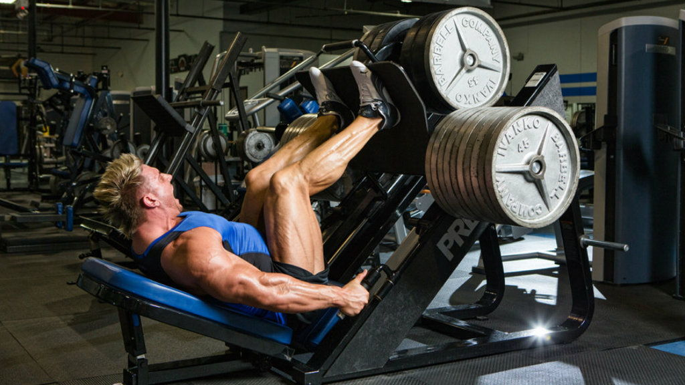

Lábra
Ez a gyakorlat egy fordított guggolásra emlékeztet, bár a legtöbb edzőteremben állítható támlájú 45o-os lábtológép van. Sok testépítő jobban kedveli ezt a gyakorlatot, mint a guggolást, mert lehetővé teszi, hogy teljes mértékben a láb mozgására összpontosítsanak, anélkül, hogy a csípő jelentősebb mértékben részt venne a mozdulatban. Sokkal kisebb a sérülés veszélye is mint a guggolás esetében, ezét kimondottan javasolt azoknak a sportolóknak, akik a súlyzós edzést valamilyen más sport mellet kiegészítésként végzik. Az elfogadott nézet szerint azonban a lábtolás nem építi olyan hatékonyan a combizmokat, mint a guggolás.